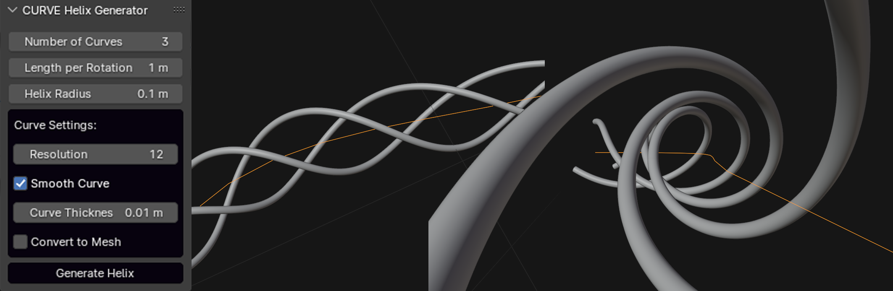

CURVE Helix Along Curve
Generate helical curves that follow a base curve

Metadata
Generate helical curves that follow a base curve
Creates evenly distributed helical curves that follow a selected base curve, with configurable radius, rotation length, resolution, and bevel depth.
Helix Along Curve Generator Creates evenly distributed helical curves that follow a base curve. Useful for generating coils, vines, or decorative patterns.
Properties
| Attr | Label | Type | Default | Range | Subtype / Options | Description |
|---|---|---|---|---|---|---|
num_curves | Number of Curves | int | 1 | 1 .. 12 | Number of helical curves to generate | |
rotation_length | Length per Rotation | float | 1 | 0.01 .. | soft_max=10 unit=LENGTH | Length of curve for one complete rotation (in meters) |
radius | Helix Radius | float | 0.1 | 0.001 .. | soft_max=1 unit=LENGTH | Radius of the helical curves |
resolution | Resolution | int | 12 | 4 .. 64 | Number of points per rotation | |
smooth_curve | Smooth Curve | bool | true | Convert to NURBS and smooth the output curves | ||
convert_to_mesh | Convert to Mesh | bool | false | Convert the output to mesh instead of keeping it as a curve | ||
bevel_depth | Curve Thickness | float | 0.01 | 0.0001 .. | soft_max=0.1 unit=LENGTH | Thickness of the generated curves |
Operators
| Class | bl_idname | Label | Options | Description |
|---|---|---|---|---|
ZENV_OT_HelixAlongCurve | zenv.helix_along_curve_generate | Generate Helix | Generate helical curves along the selected curve |